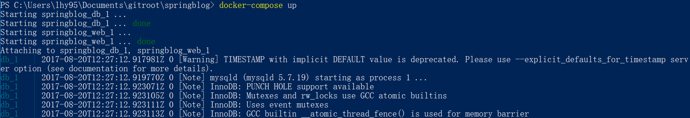

日常开发中，我们常常被开发环境所困扰。比如我司一些老项目，使用的fis系列构建工具，需要非常低版本的node，还需要jdk。还有工作中大家使用的电脑操作系统不同，可能出现在mac上运行得好好的项目在Windows上死活跑不起来。
问题背景
如上描述。
一直认为docker可以解决这个问题，终于周末有空试着应用一次。翻了一下自己的github，发现一个去年写的springboot项目被人star了一下，就想着以该项目入手，以docker来解决该项目的环境问题。
项目是这个springboot-blog，练手的一个demo，主要实现了注册登录发表编辑浏览文章，非常的简单。
这个项目的问题是要求环境jdk1.8，maven。这俩其实简单，不影响太多，一个开发者电脑上安装一个jdk和maven是一个非常正常的事情。但mysql不是，我一直非常抗拒在自己的电脑上安装mysql。就算凑齐该开发者安装了mysql，账户密码数据库表不一致也还是跑不起来的。
我一直认为，一个要让他人接触的项目，应该能一键启动，一旦跑起来了，不管是继续开发新的feature还是修复遗留的bug，都会比较得心应手，因为在代码层的改动都能比较直观的看到效果。而如果是一个无法启动的项目，错误的原因有一千种可能，到底是环境还是代码还是什么问题，难以确定。大部分情况下，遇到这种项目都需要和上个开发者进行交流、询问，口口相传是最糟糕的知识管理方式。
所以目标是，让人能一键启动该spring项目，看到效果。
解决过程
安利一个docker教程，基础的docker操作都有提到。
docker中比较重要的两个概念：镜像、容器。类似于类和对象的关系，镜像可以生成一个容器，容器可以提供环境来运行application。
所以我需要制作一个镜像，就叫spring-web吧，这个镜像应该基于ubuntu，有jdk1.8和maven以及mysql。
根据教程，这个不难实现，就是编写一个Dockerfile。要注意RUN指令条数，有问题可以查docker-hub里现有的镜像的Dockerfile。可以开一个ubuntu容器在一边逐条验证，因为docker镜像非常小，它的ubuntu里连vim和git都没有，很多地方编写和验证还挺麻烦。
但是想在这个dockerfile里编写mysql的安装部分时，发现了一个问题，mysql这个东西太难搞了。官方的Dockerfile里写了长长的一堆质量，还有entrypoint.sh这个貌似是启动、初始化数据库的脚本要复制进去才能怎么样等等。
而且想想mysql貌似也不该提供在spring-web容器里，这个容器应该是用于开发JAVA WEB的环境，jdk和maven就够了。mysql应该单独在一个容器里，且容器仅提供mysql服务。
所以问题变成了如何让两个docker容器被统一管理。就靠docker-compose，docker教程中也有。
编写docker-compose.yml文件，声明两个镜像，一个根据项目文件夹下的Dockerfile构建，一个则是mysql。web镜像将8080端口和本机的8080端口绑定，然后把当前文件夹和maven的m2仓库与web镜像里的路径对应起来。然后把web和db连起来，写上web启动的命令mvn spring-boot:run。
mysql则指定一下镜像版本，数据库名和密码。（这里数据库的初始化交给spring-data-jpa来完成）
结果
欢迎大家自行尝试一下，电脑上安装上docker，其它什么环境也不需要，把项目下载或克隆到本地，输入docker-compose up。静静等待。应该能看到如下界面，两个docker容器的日志都会被交替打印到这里。

mysql可能快一些，因为是从docker hub下载的成品镜像，而web的镜像是本地构建的，第一次可能会慢一些甚至因网络问题而出错。
成功后用浏览器打开http://localhost:8080/articles，应该能看到空空的文章列表。数据是json格式的，没有做界面。